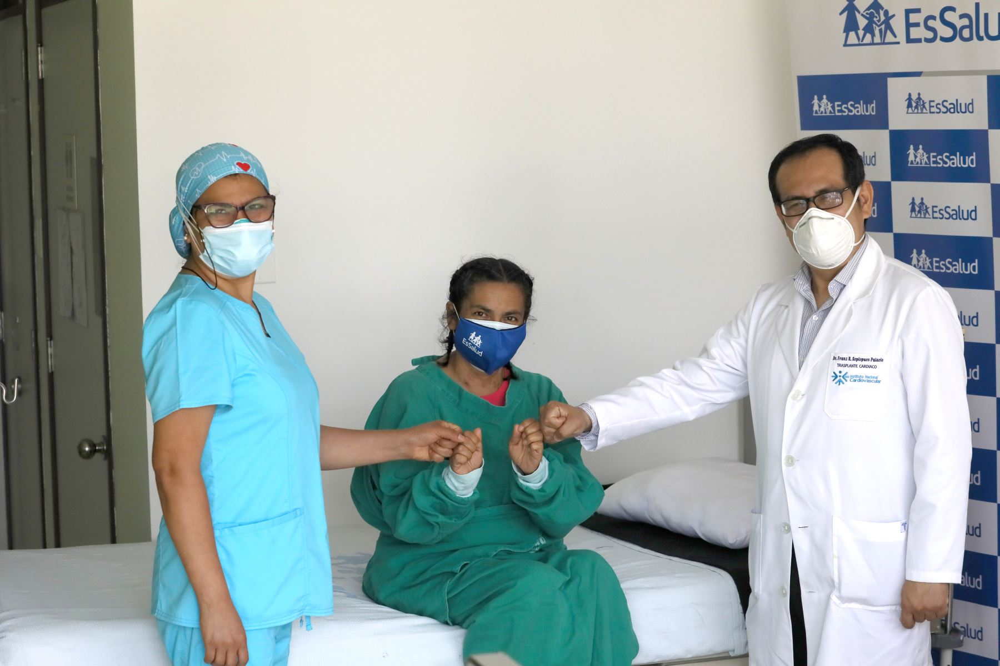
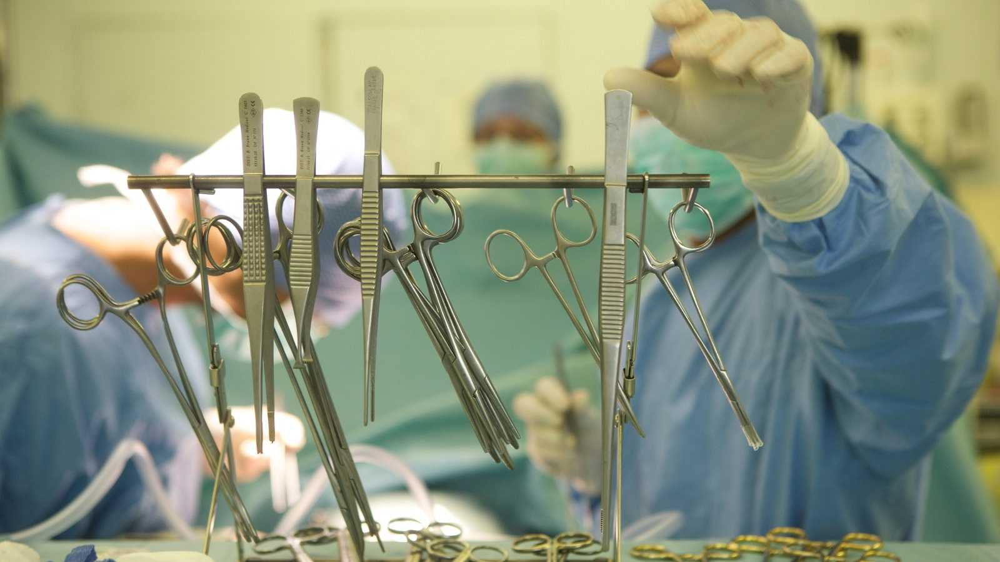

| Beneficios | |
• Consiste en la sustitución del corazón que presenta una miocardiopatía en fase terminal por el corazón de una persona fallecida. Los resultados de la Clínica en los últimos 5 años muestran una supervivencia al año del 90% y a los 5 años del 75%. Es decir, se extiende el periodo de vida de una persona que estuvo en fase terminal. |
 |
| Propuestas | |
|  | • Los hospitales podrían estar todos o casi todos preparados para realizar un transplante. Y también se podrian pedir donaciones de dinero para invertir en una mejor atención para los pacientes. |